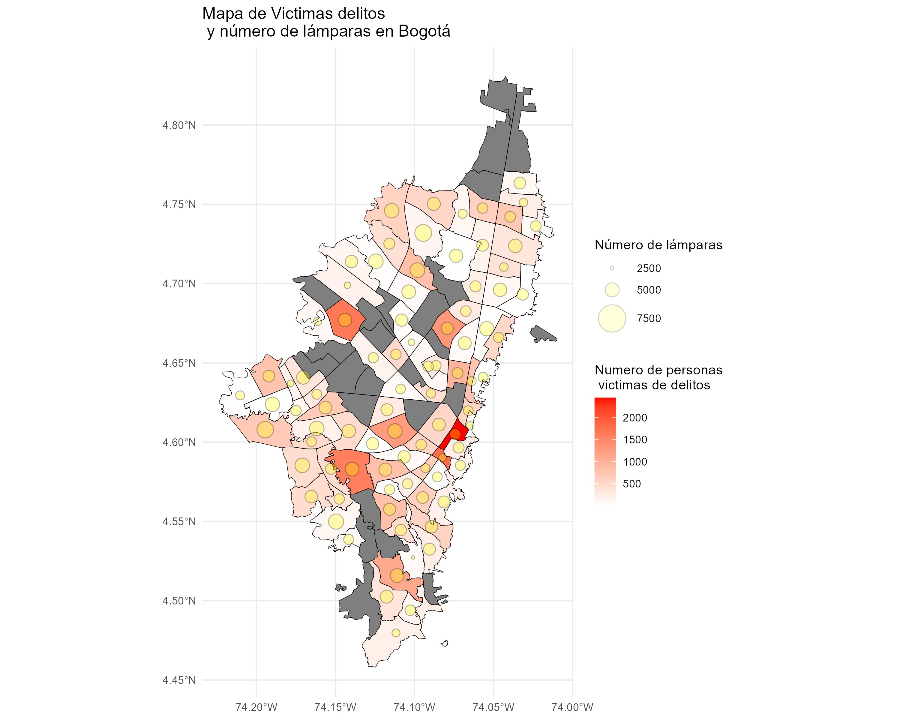
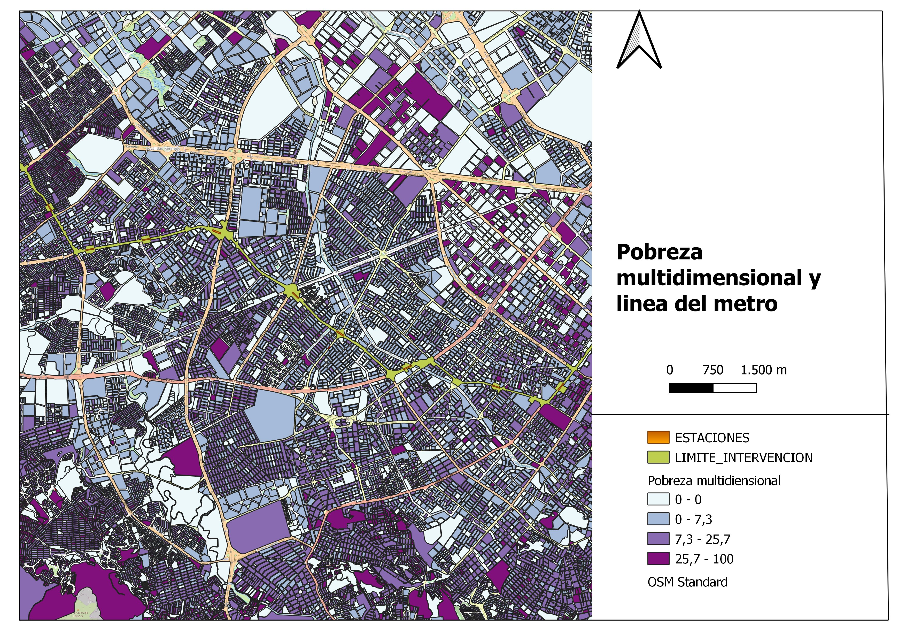
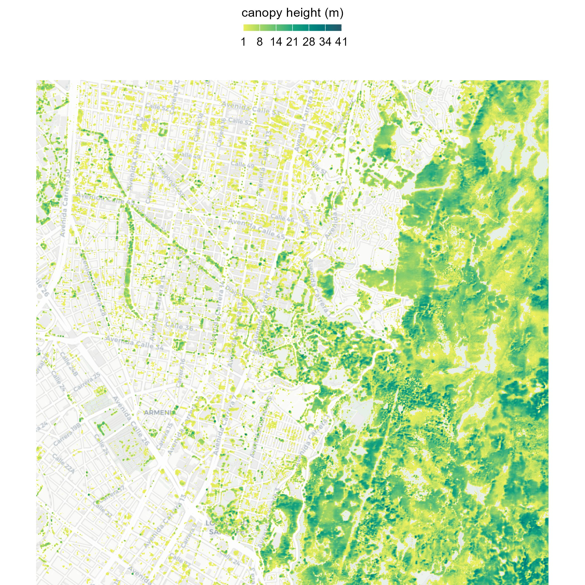
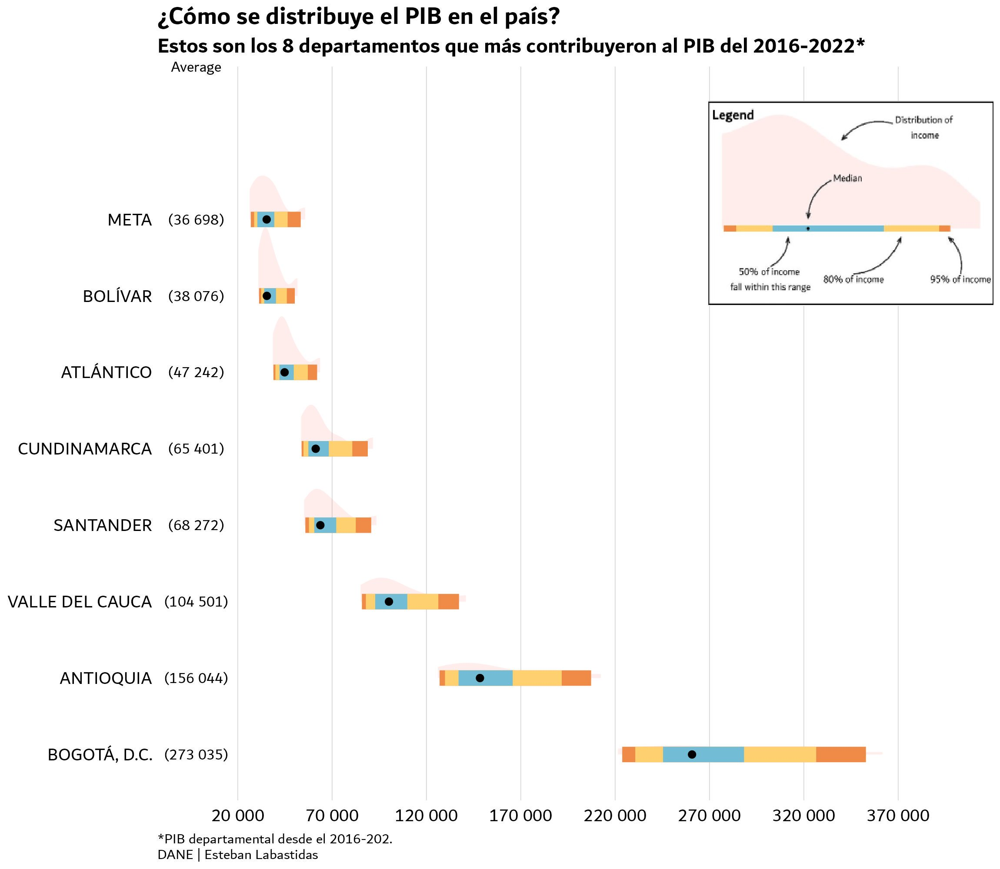

A.
Research
Bayesian econometrics, inflation forecasting, emerging-market time series. Working papers under review at Emerging Markets Review and in preparation for MAPRA.
№ 01 — OPENING · THE QUANT'S NOTEBOOK · MMXXVI
“I work between markets and models — pricing risk for banks in the morning, forecasting inflation at night, and writing about Colombia in between.”
Increasingly focused on mergers, acquisitions, and corporate valuation — where financial modeling meets strategic judgment — as the natural bridge between my consulting work and capital-markets research.
✶ ESTEBAN LABASTIDAS · BOGOTÁ · 2026
CHAPTER TWO · THE METHOD
My work lives at the intersection of four disciplines. I don't choose between them — I move through all four daily. A regulatory model in the morning, an econometric paper in the afternoon, a public column at night. This is the method.
Bayesian econometrics, inflation forecasting, emerging-market time series. Working papers under review at Emerging Markets Review and in preparation for MAPRA.
Capital markets and regulatory risk for tier-1 financial institutions. Built a production-grade SA-CCR exposure engine for a state-owned Colombian bank. Treasury-system implementation (Calypso/Nasdaq) across front, middle, and back office.
Commentary on Colombian economics — labor markets, inflation, income structure. Published on X, with growing readership.
Python, R, VBA, LaTeX. Pipelines, valuation engines, automations. I ship what I research.
CHAPTER THREE · RESEARCH
A selection of current and published work. Each paper below is either under review, in active preparation, or available as a working document. Click through for abstracts and methodology notes.
CHAPTER FOUR · PUBLIC WRITING
I write about Colombian economics on X — labor markets, inflation, income distribution, monetary policy. Not academic papers: shorter, sharper, public. What follows is a selection.
A reflection on writing as an act of transcendence — how, since the earliest civilizations, writing has been humanity's way of refusing to disappear entirely.
2.1K views · 47 reposts
READ ON X ↗An analysis of where the minimum wage actually sits within Colombia's real income distribution — beyond the usual inflation vs. business pressure debate.
Read on X for full thread
READ ON X ↗CHAPTER FIVE · APPLIED WORK
Selected engagements and systems I've built. Most are internal tools for financial institutions, some are research infrastructure, one or two are experiments.
№ 01
A fully functional SA-CCR counterparty credit risk exposure calculator for FX and Rates derivatives portfolios. Aligned with SFC regulation. Used for regulatory capital measurement, stress testing, and risk reporting at a tier-1 Colombian financial institution.
№ 02
End-to-end implementation of the Calypso treasury system across front, middle, and back office functions. Configured pricing tools, trade workflows, market data integrations, and accounting rules for a major state-owned Colombian bank.
№ 03
Production-grade pipeline for benchmarking time-series inflation forecasting models. Combines ARIMA, Bayesian VARs, and time-varying parameter models with rolling-window backtests and Diebold–Mariano tests. Infrastructure backing working papers 01–02.
№ 04
Experimental architecture combining agent-based inflation decomposition, LLM-driven narrative extraction, and multi-output orchestration. Research prototype for paper 02.
№ 05
Internal dashboards and automated workflows for monitoring investment performance metrics and reducing manual reporting effort at JP Morgan Chase, spanning finance and workforce analytics.
№ 06
Structured and analyzed datasets to assess bias patterns in Colombian news coverage of social protests. Exploratory NLP analysis across major outlets in collaboration with CINEP.
CHAPTER SIX · TRAJECTORY
VI.A · Experience
SEP 2025 — PRESENT
Management Solutions · Bogotá, Colombia
Lead client-facing workstreams with C-level executives at tier-1 financial institutions across capital markets strategy, asset management advisory, and regulatory alignment. Built a fully functional SA-CCR exposure engine for FX and Rates derivatives aligned with SFC standards, and participated end-to-end in the Calypso (Nasdaq) implementation across front, middle, and back office.
JAN 2025 — SEP 2025
Management Solutions · Bogotá, Colombia
Delivered strategic engagements for top-tier Colombian banks focused on investment product design, capital markets analysis, and financial optimization. Performed valuation of fixed income, equity, and derivatives instruments and led front-to-back efficiency assessments for capital markets desks.
JUN 2024 — JAN 2025
JP Morgan Chase
Built data pipelines and dashboards to support internal investment processes and performance monitoring. Developed automated tools to track investment metrics and applied data analytics to surface insights across finance and workforce domains.
AUG 2023 — DEC 2025
Sekia Research Group · Pontificia Universidad Javeriana
Coordinated applied research across econometrics, data analysis, academic writing, and presentation tracks. Led project management for academic publications and external research collaborations with institutions such as CINEP.
VI.B · Formation
M.Sc. Applied Economics
Universidad de los Andes · Bogotá
M.Sc. Finance & Financial Management
Escuela Europea de Negocios · Spain
B.S. Industrial Engineering
Pontificia Universidad Javeriana · Bogotá
VI.C · Credentials
CMSA®
Capital Markets &
Securities Analyst
Corporate Finance Institute · CFI
CERTIFIED
FMVA®
Financial Modeling &
Valuation Analyst
Corporate Finance Institute · CFI
IN PROGRESS
CHAPTER SEVEN · DATA VISUALIZATIONS
Maps and charts from research and consulting. Each plate applies a specific method — spatial autocorrelation, geospatial overlay, econometric visualization — to a concrete problem in Colombian policy or urban economics.

PLATE I
SPATIAL ANALYTICS · BIVARIATE CHOROPLETH
Distribution of crime victims across Bogotá's localities against public lighting coverage. Explores the relationship between infrastructure gaps and victimization rates using disaggregated municipal data.

PLATE II
URBAN POLICY · GEOSPATIAL OVERLAY
Overlay of Bogotá's multidimensional poverty index with the planned metro line corridor. Assesses the degree to which the first metro line serves the city's most deprived neighborhoods.

PLATE III
GEOSPATIAL DATA · REMOTE SENSING
High-resolution mapping of urban tree canopy height. Part of broader analysis on urban green infrastructure, heat island effects, and environmental equity across Bogotá's urban fabric.

PLATE IV
ECONOMIC VISUALIZATION · REGIONAL DATA
GDP concentration across Colombia's 32 departments — the dominant share of Bogotá D.C. and Antioquia in national output and context for spatial development policy analysis.
CHAPTER EIGHT · NOW
APR 2026
Sumit the a working paper on the hybrid early-warning system for inflation now the MAPRA submission continues.
APR 2026
Paper “Point Forecasts, Density Signals, and the Limits of Parsimony” submitted for editorial review at Emerging Markets Review. Parallel work on the hybrid early-warning system for MAPRA submission continues.
MAR 2026
New working paper in development: multi-agent architecture with LLM integration for real-time monitoring of inflation expectations in emerging markets.
MAR 2026
Published on X: Escribir cuando callar es cómodo — a reflection on writing as transcendence.
FEB 2026
Expanding work at the intersection of derivatives valuation and regulatory risk — including SA-CCR exposure engines aligned with SFC standards.
FEB 2026
Published on X: Salario mínimo, informalidad y estructura del ingreso en Colombia — where the minimum wage actually sits within the real income distribution.
JAN 2026
Started M.Sc. in Applied Economics at Universidad de los Andes. Research focus: macroeconomics, inflation dynamics, monetary policy in Colombia.
FINAL CHAPTER · CONTACT
“Open to research collaborations, consulting engagements, policy work, and conversations about inflation, markets, and the limits of what models can tell us.”